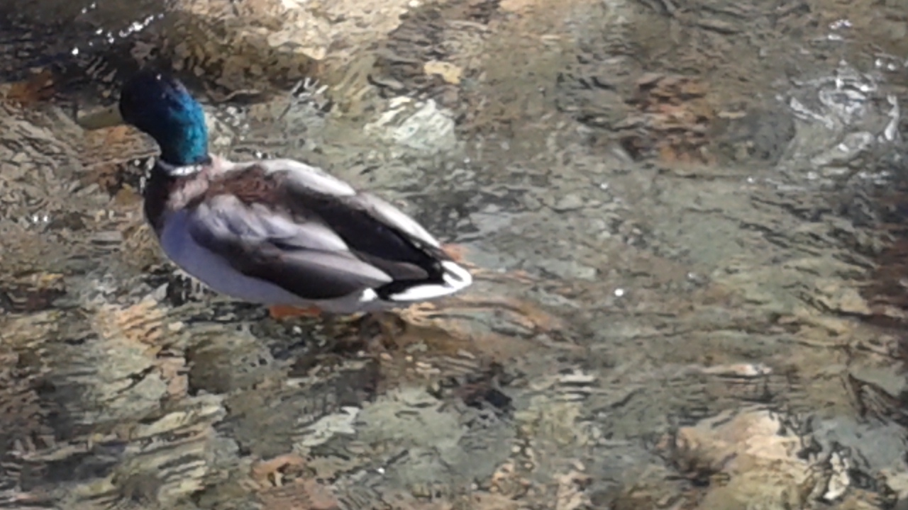

About Me

Canadian person. Graduated from the University of Waterloo in 2025.
Statistician/mathematician with a minor in combinatorics and optimization by training.
Amateur writer, trivia player, musician, singer, photographer, coder,
Shakespeare enjoyer, sports watcher, and Filipino, not in that order.
Parle et écris en français un peu.